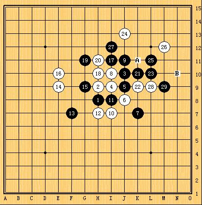
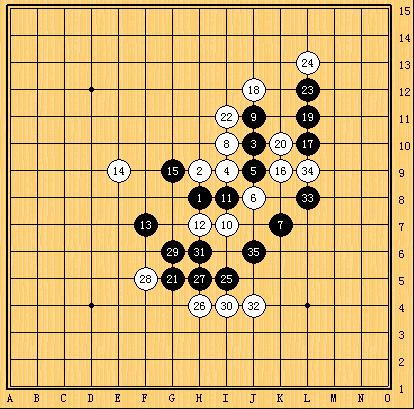
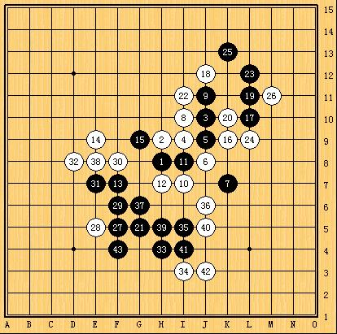
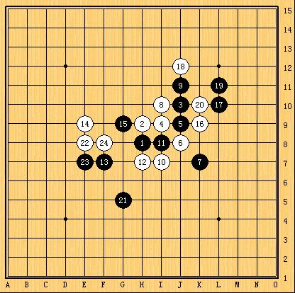

我的对局
首页
原创征文
#1 我的对局 作者：大侠 发表时间：2009-2-18 11:56:29
这是我以前在ORC上的一个对我记忆比较深刻的对局，因为对方是用英文跟我交流的，我一直都认为这是个外国人，就让本人起了要“称霸世界”之野心，所以非常努力的下这局棋。 开局对方摆出了疏星局。这里要说明一下疏星是本人比较少下，且经常输在疏星局之下，有逢疏必输之恶习（到现在还劣性难改，毫无长进）。我一看是疏星，本想打退堂鼓了，奈何之前已发了赌咒鸿愿，一定要拿下对方，挣足面子…..所以现在是进退两难了。没法，伸头是一刀缩头也是一刀，硬着头皮上吧。 我选择了交换，对方4手强防，黑方选在了J9点，白6防守我的活二且同时成斜二。黑7防守;白8成角;黑9成眠三防守;白10跳三。黑11防中间;白12活二。黑13占F7;此时白14下于了E9点，比平常下的比较多的F9又拉远了一格。我想了一下，决定经不变应万变，照常防守G9点。此时如果白16还想在左边做棋进攻，黑棋可以抓住上面的眠三与黑15的联系进行反攻。如图1

图1 实战中，对方白16很识相的占K9活三防守，黑17L10继续右边的主导地位，白18无奈挡住眠三;黑19做棋;对方的白20手毫不犹豫点住了K10，我当时傻了一下，右边已经攻不下来了，强防啊。 认真分析一下现在的局面，右边已经没什么空间可以让我继续了，不过还有两个活二可以利用，同时白棋也有反的机会，一旦此时不能因势利导继续优势，那在左边将会陷入苦战，且极有可能输掉这局。 胜负手的关键（个人认为），我陷入了长考。时间一分一秒的过去，手攥着鼠标都出汗了。慢慢的我把目光停在了黑13上，这是我看以前有人这么下的，我觉的不错，又能挡住对方的活二与眠二，还能占住空间伺机做点文章。那我现在不如就赌一下，黑21占于G5，跳的比较远的一手，同时也能挡住他的一个眠三。可谓一石二鸟，妙哉～ 白棋的22手似乎没有发现我的21手的威力，他好像还看见了他反击的机会，能迎来胜利的曙光。经过一段时间的计算之后，白22手果断的定于I11，想从左上方开始进攻。此时我一拍大腿DD得，等的就是你了。。。。。。黑23手L12活三，如果白棋挡上面，则黑速胜。如图2

图2 白棋无奈，挡住下面。黑25占于K13挡住白棋的“希望”，并且可以做杀，又是一个“一石二鸟”之计。此时我在电脑屏幕前的脸泛起了得意且不怀好意甚至令人厌恶的笑容（太嚣张了的确会让人讨厌）。 白26占L11防住我的做杀。黑27迅速占住F5做成两个活二，胜势明显。白28手E5拼命抵抗，但还是经不住我的VCT，结果败下阵来。如图3

图3
本局认为白棋的22手是为败着，如果白22占于E8，虽然黑棋仍具一定优势，但不至于会轻松获胜，可以使局面更加平衡。如图4

图4 这局棋给我的感受就是五子棋要想获胜就一定要掌握主动，好的选点能掌控好的空间，利于子与子之间的有机配合与协同，达到战略目的。同时也要稳中求胜，切不可急燥，一子错而满盘输，这与做人是一样的道理。 我信仰的五子棋是讲究个人的修为。棋品为重，虚心学习，认真思考，不娇不燥，平淡胜负，修身养性。。。 ――与君共勉 。 QQ：81339350
［ 有志青年 于 2009-3-12 12:22:41 时奖励此帖[金币加 20 威望加1］
#2 Re:我的对局 作者：茗弈小刀 发表时间：2009-2-18 21:25:02
支持一下朋友！加油！！
#3 Re:我的对局 作者：五林外传 发表时间：2009-2-18 21:47:06

#4 Re:我的对局 作者：炫飞柳扶风 发表时间：2009-2-18 23:45:57
写的很好，分析的很有条理。学习了
#5 Re:我的对局 作者：江南新绿 发表时间：2009-2-19 9:49:11
写的很好。学习了。
#6 Re:我的对局 作者：启蒙 发表时间：2009-2-21 21:33:45
楼主对棋局的分析很认真仔细，谢谢了！说一下我的想法(很不成熟)：
a) 如果我下白,20手我会下L9，不给黑棋想通过右边的进攻把优势向中下转移的机会。
b) 如果我下黑棋，当时我没下边的进程，自己想了想，我19手会下在F8，我的思路很简单：黑右边怎么做棋都会
被防死，干脆先不动手，而中间有些担心白棋走G11之类的进攻，所以走F8既做了棋，又限制白棋进攻。。
现在想想觉得还是你的实战好于我，因为你的L11虽然简单被防住，但为下面的进攻创造了伏笔！
我的思路过于直接了，怎么不好也说不太清楚，我下棋时考虑的时候老是晕晕的^_^
c) 21手是好棋！看似孤单，其实隐含着和右边黑棋的联系，白实战大意了！刚才看棋的时候我思考我的22手也可能走那
就想了这么多。。呵呵，请来往的老师们指点一下我想的19手！
#7 Re:我的对局 作者：大侠 发表时间：2009-2-21 22:25:45
黑19手下F8，我认为白20下G11可以牵制住黑方，这样局面就平淡了。
当时实战中我的黑19只是试探性进攻，当时并没有想那么多。
我下的不一定是对的或者是最好的选择，有什么不妥的地方还请各位高手指出。
#8 Re:我的对局 作者：二十七刀 发表时间：2009-2-21 22:29:19
很好,非常好,OK,大侠,你写的太棒了
#9 Re:我的对局 作者：雅匪 发表时间：2009-2-21 22:29:50
下得比较严肃，讲得比较好玩
#10 Re:我的对局 作者：我爱你遥遥 发表时间：2009-2-21 23:26:51
看高手过招 学习了
#11 Re:我的对局 作者：二十七刀 发表时间：2009-2-22 0:27:11
宝贝,我再顶下,你写的太出色了,非常的棒 亲亲
亲亲［本站用户 大侠 于 2009-3-26 22:21:30 花5个金币送您鲜花一朵］
#12 Re:我的对局 作者：人生如棋有道即可 发表时间：2009-2-22 1:21:00
很精彩，讲解的也好。值得学一下。
#13 Re:我的对局 作者：17号蓝星仔 发表时间：2009-2-25 17:06:23
 支持支持
支持支持
#14 Re:我的对局 作者：茗弈小刀 发表时间：2009-2-25 17:08:30
大侠QQ号还没留吧？快补上去吧。
#15 Re:我的对局 作者：大侠 发表时间：2009-2-25 22:02:46
怎么补啊，有志同学都好几天没出现了。。。。
QQ：81339350
#16 Re:我的对局 作者：越狱行辕 发表时间：2009-3-3 22:30:30
 称霸世界？
称霸世界？
#17 Re:我的对局 作者：逍遥一梦 发表时间：2009-3-10 20:51:54
咱逍遥阁的大侠公子果真不凡.有空多来与族员们交流交流
#18 Re:我的对局 作者：刀魂 发表时间：2009-3-10 21:31:46
呵呵，分析的不错，看样子，你的潜力巨大哦
#19 Re:我的对局 作者：刀魂 发表时间：2009-3-12 13:39:12
棋路与思想都很分明，看样子，是实战派的高手
#20 Re:我的对局 作者：梦之月 发表时间：2009-3-12 13:42:37
支持...........
#21 Re:我的对局 作者：夏日寒冰 发表时间：2009-3-12 13:52:20
厉害阿，高手就是高手
［本站用户 逍遥一梦 于 2009-3-12 17:39:13 花5个金币送您鲜花一朵］
#22 Re:我的对局 作者：苍苍 发表时间：2009-3-13 9:26:00
看的有点晕 。。。。。呵呵
顶一个。。。。。
#23 Re:我的对局 作者：竹 发表时间：2009-3-15 9:09:02
厉害，看过了，学习了。
#24 Re:我的对局 作者：月寻 发表时间：2009-3-17 10:49:46
嗯～嗯！
学习了～

#25 Re:我的对局 作者：顽童 发表时间：2009-3-19 21:43:10
黑的优势一直存在,从19到26手和 从27至43手的定局完全两个不同的区域,没有任何关联.只不过李公子和对手当时都没有意识到下面黑有如此大的优势.我还困惑的是白28手有什么玄机,看了好久没看出.总之以我之见对手 和李公子水平还是有相当差距的
李公子的评说更加值得一看
［本站用户 大侠 于 2009-3-21 19:13:34 花5个金币送您鲜花一朵］
#26 Re:我的对局 作者：天逸W西西 发表时间：2009-4-3 23:58:45
请作者加群:27122239
(加群时请说明是参赛者,谢谢)
爱五子棋网-原创文学活动宣
2009年4月3日